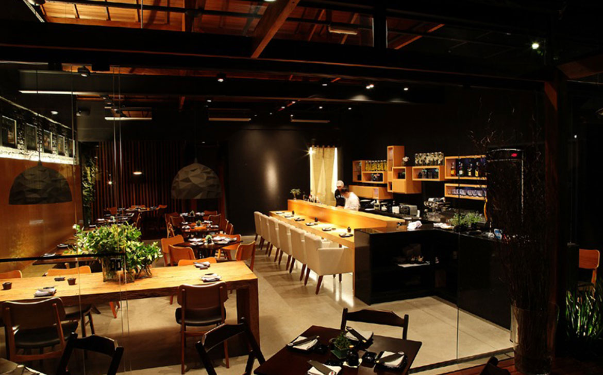

Nossa história
Somos apaixonados pelo que fazemos há 5 anos, nosso restaurante localizado no Jardim Santa Cruz é um lugar aconchegante e conta com um cardápio variado para todos os gostos.
Somos apaixonados pelo que fazemos há 5 anos, nosso restaurante localizado no Jardim Santa Cruz é um lugar aconchegante e conta com um cardápio variado para todos os gostos.